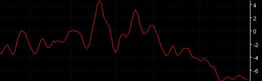

VFI - VFI
Parameters:
- Color - plot color
- Line Type - The type of plot to draw
- Label - The text that identifies the plot
- Period - The VFI period
- Smoothing - The smoothing period
- Smoothing Type - The MA type used for smoothing
Description:
Formula Reference:
| Syntax |
VFI(Smoothing Type, Period,
Smoothing) |
| Function |
|
| Example |
VFI(SMA, 100, 3) |